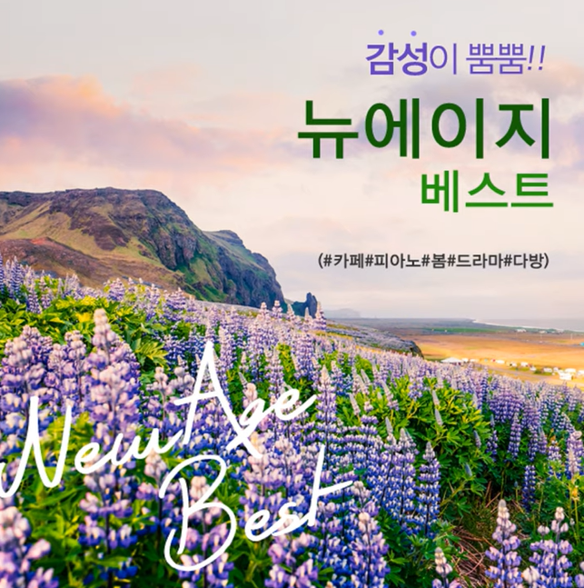

Video editing has been a hobby of mine since elementary school. Although I am definitely not a professional, I still love doing it. I love the creativity aspect of video editing and it's a great creative outlet for me.
Throughout my day, I listen to music at various times. I love listening to it while I'm studying or doing homework to help pass the time. I particularly enjoy calming songs. For example, I really enjoy this particular song called: 꽃날 (황진이 OST). I have no idea what it is from, but it's a really nice song!
Although I don't consider myself to be very good at it, drawing is still a hobby of mine. I don't do it very often, but I've drawn a couple times for my chinese projects last year. (See below)
One of my interests is actually child development! I was able to delve deeper into this interest over the summer when I interned at Partnership for After School Education (PASE), a nonprofit organization focused on child development in after schools, this summer. I got some insight into the behind the scenes of fundraising and supporting the programs, rather than working with kids directly. However, as a Discovery Guide at the New York Aquarium, I got to interact with children more directly and I learned different ways to help engage child and teach them best.